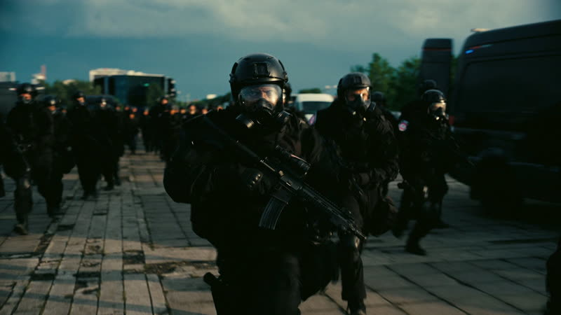

The siege at the opera
A CIA team goes into a staged terrorist siege to pull out an asset. The Protagonist is compromised. A masked man with an orange trinket on his bag saves him, and a bullet in the seat beside him un-fires. His team is caught and tortured.
It is the first day of the film and, as it turns out, the last. The masked man is Neil. The bullet is the first inverted object we see.
Forward: the Protagonist